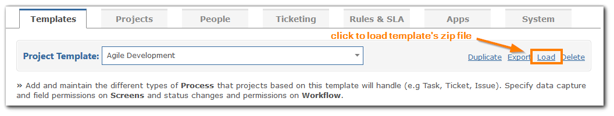

NoteThis functionality is not available without a full Gemini license
To import a Template, place the zip file in the app_data\templates folder, then click the 'Load' link at the top right of the Template page. The contents of the zip file will be unpacked into the appropriate folders to create the new Template.
